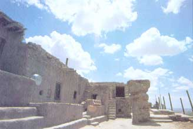

REPORTS FROM AMERICA
The unwritten book of good manners
A rock shrine stands amidst remnants of a goo-year-old Hopi village on First Mesa in Walpi, Arizona.
CORRALES, NM-the 180-mile stretch of land visible from my backyard is the center of the universe-in fact, several such centers. Earth navels, they are called as well, places where "the people" emerged into this one. Far to the west, near the confluence of the Colorado and Little Colorado rivers, is another one, called sipapu by the Hopi. It's the point from which these "oldest of the people" emerged long ago and began the long treks that resulted finally in their settlement of some remote mesas above the Painted Desert in north-eastern Arizona about a thousand years ago.
I too live on the edge of a mesa, overlooking the Rio Grande, the sprawling city of Albuquerque, and the Sandia Mountains-named for a Pueblo tribe whose reservation prevents Albuquerque from spreading farther north. Beyond this open space is yet more, stretching northward almost to Santa Fe, all of it the lands of various Pueblo tribes, each of which has its own earth navel.
From my roof I can look west and see Mount Taylor, which looms above Grants, a small New Mexico city built on the dreams of unmeterably cheap electricity, thanks to the existence there of vast seams of uranium ore. Mount Taylor is one of the four sacred mountains of the Navajo, and you can't see Mount Taylor without also thinking about San Francisco Peaks, a mountain whose three peaks rise above Flagstaff, Arizona, 400 miles west of here. It's another mountain sacred to the Navajo and is also the winter home of the Hopi rain spirits, the kachinas. When you see clouds building up over San Francisco Peaks, the Hopi say, it is the kachinas rehearsing the business of bringing rain to Hopi cornfields. There is a ski lift snaking up San Francisco Peaks, and the Hopi worry that skiers might unwittingly stumble into these rehearsals, getting in the way.
Like the crags and grottoes of ancient Greece, the Southwest is populated with shrines and with demigods, deities, and spirits working out to this day their heroic and mundane affairs among the daily lives of the people who can still see them. It is safe to say that nowhere in the United States is the Indian cultural presence more prevalent and deep-seated than here in the Southwest, that in no other place is the very concept of mother earth as deeply, and routinely, felt. This is not to romanticize Indians as natural ecologists who raise their fists in rage at every insult (real or imagined) to their mother. Much of Navajoland, an area the size of West Virginia, is significantly overgrazed by sheep, still a vital component of the Navajo way. There are Hopi priests who say that mother earth contains such resources as coal that should be used (in fact, Hopi fires were fueled with coal before it was used in England). The strip-mining of Black Mesa gets mixed reviews by the Hopi, and many dewy-eyed environmentalists and others who want to think that Indians are somehow better than the rest of us find this extremely disappointing. "Sellouts," "not real Indians," "people who have lost their traditional values," it is said uncomprehendingly. Here in this tri-cultural area (the Hispanic presence also predates that of the Anglos), there is a tendency on the part of some to point out, whenever possible, and invidiously, that Indian people, too, are trying to get in on the big cash bonanza of the dominant society. "Look at all the bingo parlors, exempt from gambling laws because they're on 'sovereign' Indian lands," they say. "Look at the Mission Indian reservation in southern California, a tiny plot amid several big Anglo ranchers. The Indians want to turn the whole place into a landfill and make a fortune off the solid waste of San Diego."
Trouble everywhere. People raising their voices along with their hackles. Indians, while unalterably religious in their feelings for nature and the land, are also pragmatic. Small groups of people eking out a living from the land have generally, through human history, been smart enough not to foul their nests. Large aggregations of people in particular, and any group whose survival is threatened, will often forget to think about the long term. Even Indians. Nevertheless, a sense of the earth as a live being prevails in Indian country.
I look north of here to the Jemez Mountains, and I am reminded that there are spirits there too, though I cannot see them, spirits that bespeak an older way of seeing the connection of man and earth; legends and myths we might call them, lessons in a kind of etiquette. Rarely have I ever heard an Indian voice raised in any conversation. Indian voices are as quiet as the breeze playing among the rocks, telling old stories about the whys of things.
We have our own stories too, our own legends and myths-though these tend to be based upon what we know to be the facts. What high school biology student has not heard the one about the moths and the factories, a British tale? It seems that there were all these light-colored moths that liked to sit resting on the trunks of trees during part of their day. The tree trunks were about the same shade as the moths, so birds had a hard time finding the insects. Then factories were built and smoke billowed forth, and it blackened the tree trunks with soot and, lo, the moths themselves turned dark so as to maintain their canny camouflage. Of course, this is an evolutionary tale. It is quite true (except for the imputation of purpose among moths). It works like this: Among the moth population were some dark ones, oddballs, whose strain was more subject to predation in the old prefactory days and therefore was less numerous overall. Then comes the darkening of the tree trunks, and the light-colored moths become more subject to predation. Their numbers decline rapidly (though not entirely), and the dark ones multiply and gain numerical superiority. One can expect that Clean Air acts will reverse the process.
I stand in my backyard and look out into the night. The lights of Albuquerque gleam and twinkle like a great necklace in a black velvet dish. The necklace grows weekly. North, the darkness spreads and deepens, Indian lands. I decide that if I were in charge of the moth population in the English midlands, I would monitor smaller, oddball strains with some regularity to make sure there were enough around in case something else went haywire. I remind myself with a mental slap on the wrist that one invites danger when comparing human affairs and values to biological evolution. Bur I am glad that, here in the Southwest at least, there is a small fraction of the population that still holds the notion that the earth is, in utter reality, a mother-a truly living being (which is why the earth is sacred), a being who needs to be dealt with by means of a fine sense of reciprocity, by means of rules of etiquette that are not that hard to understand.
Chances are it's too late for many of us to repopulate the world we see with spirits, with an all-explaining animism like that which prevails here in the Southwest on Indian lands. But we certainly can see the tree trunks changing around us, and we probably will need to consult that old book of manners one of these days.
|
 SUSANNE PAGE |
|
|